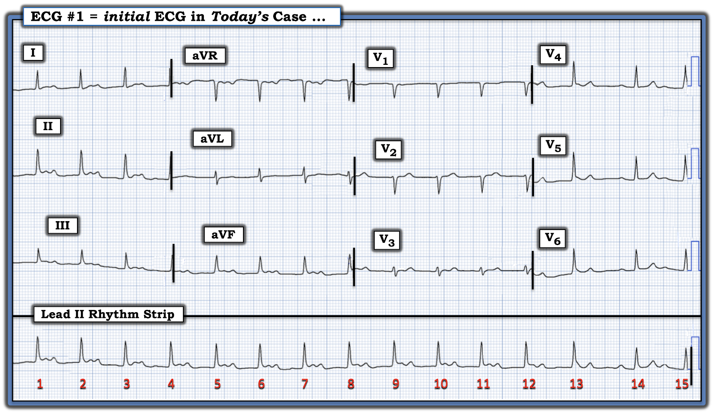
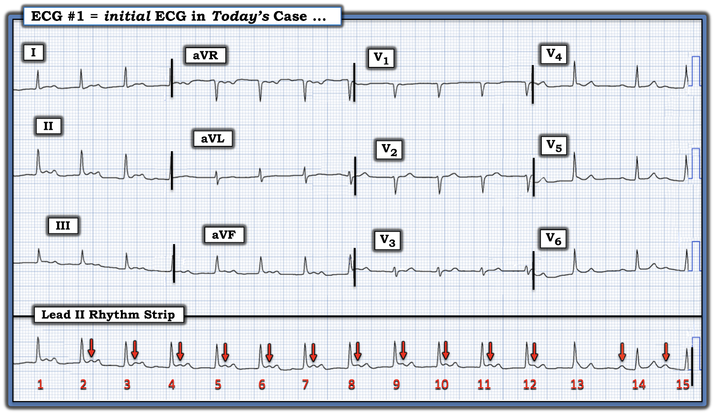
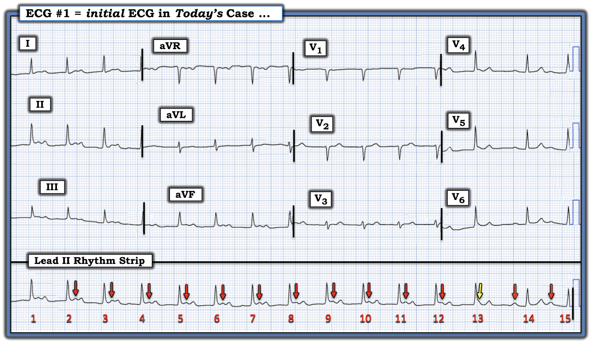
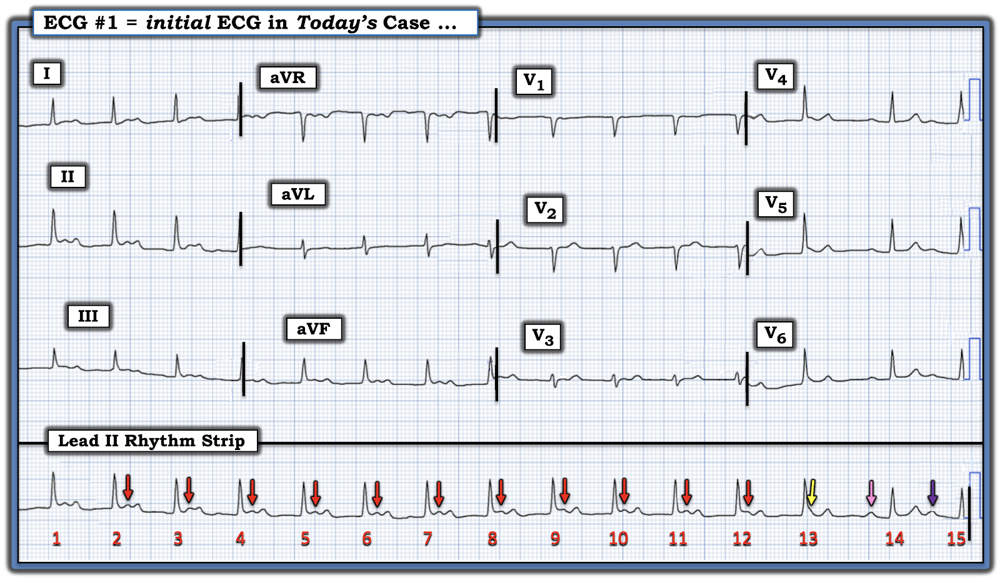
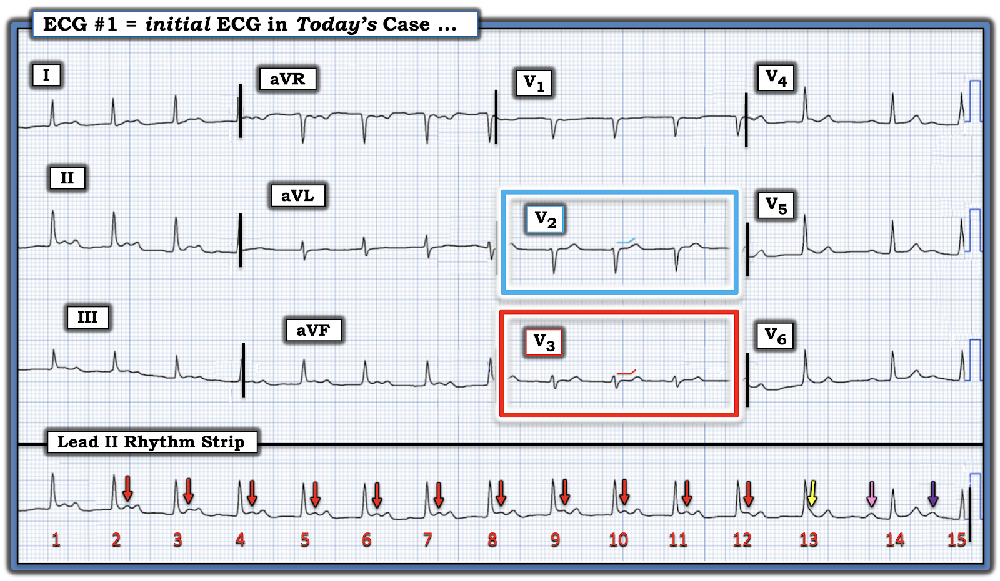
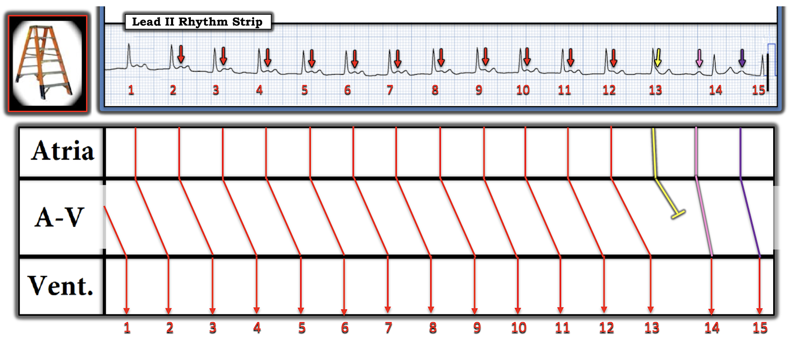

ECG Blog #437 — Một câu trả lời gồm 2 phần ...
Tôi được gửi điện tâm đồ ở Hình 1 — nhưng không kèm theo bất kỳ bệnh sử nào.
CÂU HỎI:
- BẠN sẽ đọc bản ghi này như thế nào?
- TẠI SAO tôi lại nói rằng đây là "Một câu trả lời gồm 2 phần?"


SUY NGHĨ CỦA TÔI về ca bệnh hôm nay:
Dù việc cung cấp một bệnh sử ngắn gọn, phù hợp là rất quan trọng để đọc điện tâm đồ lâm sàng tối ưu — những ca như ca hôm nay lại thường tỏ ra bổ ích hơn nữa, vì chúng ta không được cung cấp bất kỳ bệnh sử nào (và do đó cần suy luận ra bối cảnh lâm sàng có khả năng nhất để giải thích điện tâm đồ trước mặt chúng ta).
- Như tiêu đề tôi đã chọn — bài hôm nay có câu trả lời gồm 2 phần, bao gồm: i) Xác định nhịp tim; và, ii) Dựa trên nhịp này — diễn giải xem bản ghi 12 chuyển đạo này gợi ý mạnh mẽ đến nguyên nhân của nhịp này như thế nào!
Hãy XEM LẠI điện tâm đồ ở Hình 1.
- Nhịp ở đây là GÌ?
- Việc biết nhịp này là gì — giúp ích như THẾ NÀO trong việc xác định nguyên nhân của nhịp này?
===============================
TRẢ LỜI:
Hãy giả định rằng bệnh nhân trong ca hôm nay ổn định huyết động. Tôi thích bắt đầu với dải nhịp DII dài — bằng cách sử dụng cách tiếp cận Ps, Qs, 3R (Xem ECG Blog #185 để biết thêm về Ps, Qs, 3Rs).
- Nhịp thất ở Hình 1 trông đều (Regular) — ngoại trừ một chút không đều ở cuối bản ghi (rõ nhất là khoảng R-R giữa nhát #13 đến nhát #14, rõ ràng dài hơn tất cả các khoảng R-R khác).
- Tần số (Rate) thất nói chung là ~100/phút, vì khoảng R-R của tất cả các nhát trừ 2 nhát cuối dài ~3 ô lớn (và 300 ÷ 3 = 100/phút).
- Phức bộ QRS hẹp ở cả 12 chuyển đạo. Do đó — nhịp này là nhịp trên thất.
- Sóng P có hiện diện!
ĐIỂM THEN CHỐT (PEARL) #1: Những bước đơn giản là đánh số các nhát và đánh dấu những sóng P mà chúng ta chắc chắn thấy — giúp rất nhiều cho việc nhận ra điều gì đang diễn ra.
- Bắt đầu từ nhát #2 ở Hình 2 — các mũi tên ĐỎ đánh dấu từng sóng P mà chúng ta chắc chắn thấy.
CÂU HỎI:
- BẠN có nghĩ rằng nhịp nhĩ ở Hình 2 vẫn đều suốt toàn bộ dải nhịp không?
- GỢI Ý: Bạn có thấy bất kỳ dấu hiệu nào cho thấy có thể có thêm một sóng P đúng lúc xuất hiện giữa nhát #12 và nhát #14 không?


TRẢ LỜI:
- ĐIỂM THEN CHỐT (PEARL) #2: Khi nhịp nhĩ nền đều (có thể trừ 1 hoặc 2 sóng P không thấy rõ) — thì rất có khả năng 1 hoặc 2 sóng P "bị thiếu" đó vẫn hiện diện (và có thể xuất hiện đúng lúc) — nhưng chỉ đơn giản là bị ẩn bên trong một phức bộ QRS hoặc sóng ST-T.
- Dùng compa đo (calipers) giúp việc tìm kiếm bất kỳ sóng P "bị thiếu" nào có thể đang ẩn nấp trở nên dễ dàng hơn — vì bạn biết cần nhìn vào đâu.
Hãy xem xét những điều sau ở Hình 3:
- NẾU nhịp nhĩ nền ở Hình 3 là đều — Chẳng phải chúng ta sẽ mong đợi thấy một sóng P "đúng lúc" khác tại điểm được đánh dấu bằng mũi tên VÀNG sao?
- Chẳng phải việc biết nơi cần nhìn ở Hình 3 — giúp chúng ta nhận ra rằng có một biến dạng thêm vào (ngay dưới mũi tên VÀNG — ở tận cuối phức bộ QRS của nhát #13?).


Giờ đây chúng ta đã có đủ các yếu tố cần thiết để giải quyết rối loạn nhịp của ca hôm nay:
- Các mũi tên màu ở Hình 4 cho thấy có một nhịp nhĩ nền đều.
- Phức bộ QRS hẹp.
- Khoảng ngưng nhẹ trong nhịp (xảy ra giữa nhát #13 đến nhát #14) — kết thúc bằng một sóng P dẫn truyền từ xoang (tức là, sóng P có mũi tên HỒNG ở Hình 4). Sóng P HỒNG này tạo ra nhát #14 dẫn truyền từ xoang, nhát này có khoảng PR kéo dài tối thiểu.
- Sóng P tiếp theo xuất hiện đúng lúc — và được dẫn truyền với blốc AV độ 1 (tức là, sóng P có mũi tên TÍM ngay trước nhát #15 — có khoảng PR = 0.31 giây).
- Đi ngược lại — không có QRS nào theo sau sóng P có mũi tên VÀNG ở Hình 4. Điều này gợi ý rằng sóng P có mũi tên ĐỎ đứng trước nhát #13 có được dẫn truyền, dù với blốc AV độ 1 rất dài (tức là, khoảng PR >0.52 giây).
- Điều này gợi ý rằng mỗi sóng P có mũi tên ĐỎ trước đó ở Hình 4 cũng đang được dẫn truyền với khoảng PR rất dài để tạo ra phức bộ QRS kế tiếp phía trước chúng.
- Kết luận: Nhịp trong ca hôm nay là blốc AV độ 2, Mobitz loại I ( = Wenckebach AV).
ĐIỂM THEN CHỐT (PEARL) #3: Lý do việc nhận ra Mobitz I trên bản ghi hôm nay khó khăn như vậy — là vì có một chu kỳ rất dài cho tới khi một nhát bị rớt.
- Với chu kỳ Wenckebach dài — mức tăng khoảng PR từ nhát này sang nhát kế tiếp có thể rất nhỏ và khó nhận ra khi so sánh bằng mắt. Trong những trường hợp như vậy — cách dễ nhất để xác minh rằng khoảng PR có tăng dần là NHÌN vào khoảng PR ngay trước khoảng ngưng (tức là, khoảng PR trước nhát #13 ở Hình 4) — và so sánh nó với khoảng PR mở đầu chu kỳ kế tiếp (tức là, khoảng PR từ sóng P có mũi tên HỒNG ở Hình 4 — cho tới nhát #14).
- Việc nhịp hôm nay là blốc AV độ 2 Mobitz I — được khẳng định bởi sự hiện diện của các "Dấu chân" khác của Wenckebach, đó là: i) Nhịp nhĩ đều; ii) Khoảng ngưng chứa nhát bị rớt ngắn hơn hai lần khoảng R-R ngắn nhất; và, iii) Khoảng PR tăng dần, điều này dễ thấy ở Hình 4 trong chu kỳ Wenckebach kế tiếp (tức là, khoảng PR tạo bởi sóng P có mũi tên TÍM rõ ràng dài hơn khoảng PR tạo bởi sóng P có mũi tên HỒNG). Để biết thêm về "Dấu chân" của Wenckebach — Xem ECG Blog #164.


Việc biết nhịp giúp ích gì cho việc đọc điện tâm đồ 12 chuyển đạo?
Như tôi vẫn thường nhấn mạnh — blốc AV độ 2, Mobitz loại I thường gặp nhất khi đi kèm với OMI thành dưới và/hoặc thành sau cấp.
- Do đó, việc biết nhịp hôm nay là Mobitz I thôi thúc tôi tìm kiếm đặc biệt kỹ bất kỳ gợi ý nào của OMI thành dưới và/hoặc thành sau cấp.
Ở Hình 5 — tôi đã đánh dấu 2 chuyển đạo trên bản ghi 12 chuyển đạo hôm nay đã ngay lập tức "lọt vào mắt tôi".
- Chuyển đạo V3 (trong hình chữ nhật ĐỎ) — là chuyển đạo đáng chú ý nhất. Bình thường, phải có một chút ST chênh lên nhẹ, dốc lên thoai thoải ở chuyển đạo V2 và V3. Vì vậy — không thể nào đoạn ST thẳng đuỗn không có chút ST chênh lên nào ở chuyển đạo V3 lại là một dấu hiệu "bình thường".
- Chuyển đạo V2 (trong hình chữ nhật XANH DƯƠNG) — cũng có đoạn ST thẳng đuỗn một cách bất thường, qua đó củng cố nhận định của chúng ta rằng sóng ST-T ở chuyển đạo kế cận V3 là không bình thường.
- Thay đổi sóng ST-T ở các chuyển đạo khác cho thấy sóng ST-T dẹt không đặc hiệu, và không có giá trị chẩn đoán.
- Xin nhấn mạnh: Những thay đổi sóng ST-T nêu trên là kín đáo. Dù vậy — Với nhịp là blốc AV độ 2, Mobitz loại I — hình ảnh điện tâm đồ của 2 chuyển đạo ở Hình 5 (trong các hình chữ nhật màu) — phải được diễn giải là gợi ý OMI thành sau cấp — cho tới khi chứng minh được điều ngược lại!


GIẢN ĐỒ BẬC THANG của ca hôm nay:
Để cho rõ — tôi đã vẽ một giản đồ bậc thang (laddergram) ở Hình 6.
- Một số yếu tố thiết yếu của tính chu kỳ Wenckebach có mặt ở Hình 6. Chúng bao gồm: i) Nhịp nhĩ đều; — ii) Khoảng ngưng chứa nhát bị rớt ngắn hơn hai lần khoảng R-R ngắn nhất; — và, iii) Khoảng PR kéo dài dần thấy được ở 2 nhát cuối trên bản ghi.
- LƯU Ý: Chẳng phải gần như không thể nhận ra bất kỳ thay đổi nào của khoảng PR trong 12 nhát đầu tiên của bản ghi này sao?
- Dù vậy, sóng P VÀNG ở Hình 6 không được dẫn truyền — và — khoảng PR ngay trước khoảng ngưng trong nhịp này rõ ràng dài hơn khoảng PR ở cuối khoảng ngưng. Điều này cho thấy rõ nhịp hôm nay là Mobitz I, blốc AV độ 2.


==================================
Lời cảm ơn: Tôi xin cảm ơn người đã gửi ca bệnh này cho tôi mà không nêu danh.
==================================
Các bài ECG Blog liên quan đến ca hôm nay:
- ECG Blog #205 — Ôn lại Cách tiếp cận hệ thống của tôi trong việc đọc điện tâm đồ 12 chuyển đạo.
- ECG Blog #193 — Ôn lại những điều cơ bản để dự đoán động mạch "thủ phạm" (cũng như ôn lại lý do vì sao thuật ngữ "STEMI" — nên được thay bằng "OMI" = MI do tắc (Occlusion)).
=================================
- BẤM VÀO ĐÂY — để xem 6 Video điện tâm đồ mới (về đọc nhịp — đọc điện tâm đồ 12 chuyển đạo với các ca bệnh minh họa chẩn đoán OMI cấp) của tôi.
- BẤM VÀO ĐÂY — để nghe 2 Podcast điện tâm đồ mới (về các lỗi khi đọc điện tâm đồ & nhịp — và — các lỗi khi đánh giá OMI cấp) của tôi.
=================================
- Nhận biết sóng T tối cấp — các kiểu chuyển đạo — một OMI (dù không phải STEMI) — Xem Bình luận của tôi ở cuối trang trong bài ngày 8 tháng 11 năm 2020 trên Dr. Smith's ECG Blog.
- Nhận biết các dấu hiệu điện tâm đồ của xoáy trước tim (Precordial Swirl) (do OMI cấp của các nhánh xuyên vách thuộc LAD) — Xem Bình luận của tôi ở cuối trang trong bài ngày 22 tháng 3 năm 2024 trên Dr. Smith's ECG Blog.
- ECG Blog #294 — Ôn lại cách nhận biết LIỆU động mạch "thủ phạm" đã tái tưới máu hay chưa.
- ECG Blog #230 — Ôn lại cách so sánh các điện tâm đồ liên tiếp.
- ECG Blog #115 — Cho thấy những thay đổi ST-T ngoạn mục có thể xảy ra chỉ trong vòng 8 phút.
- ECG Blog #268 — Trình bày một ví dụ về sóng T tái tưới máu.
- ECG Blog #400 — Ôn lại khái niệm thay đổi sóng ST-T "động" (dynamic).
- ECG Blog #337 — Một ca "NSTEMI" mà thực ra là OMI đang tiếp diễn với thời gian không rõ (biểu hiện bằng sóng T tái tưới máu ở các chuyển đạo thành dưới).
- ECG Blog #351 — để ôn lại chẩn đoán điện tâm đồ OMI thành sau cấp (kèm các liên kết tới những ví dụ khác về OMI thành sau trong phần tài liệu tham khảo ở cuối bài này).